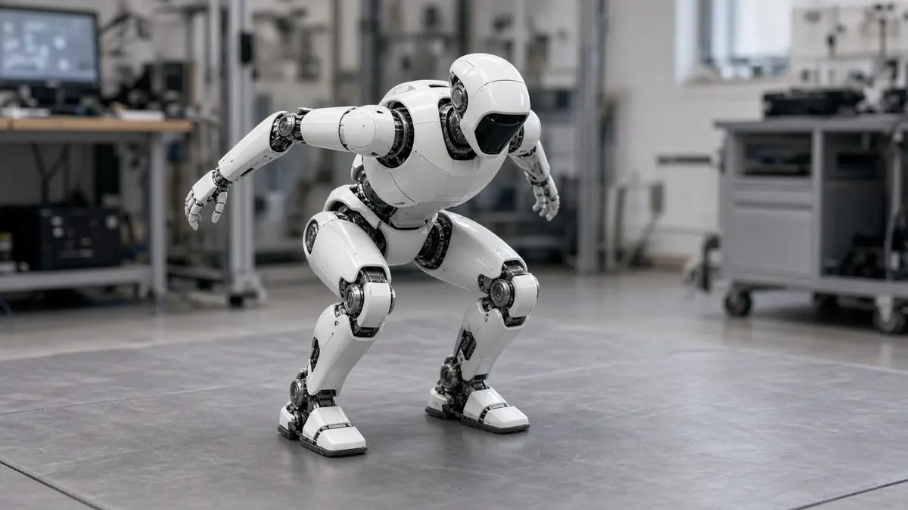

Research
Berkeley's SuperMimic trains a humanoid motion controller in three hours on one GPU, authors report
Short answer: UC Berkeley researchers report that a method called SuperMimic trained a humanoid whole-body motion controller in about three hours on a single GPU, surpassing the return of a baseline tracker that, per the authors, trained for seven days on 128 GPUs. The claims come from the paper's abstract and the project page; the authors list it as a CoRL 2026 paper.
The method learns to imitate a large library of human motions, 129,514 in the benchmark. Instead of training only inside a physics simulator, it fits one learned world model to logged simulator data and trains the control policy together with it, using gradients from short imagined rollouts, the authors explain.
The authors report using more than 1,000 times fewer GPU-hours than the baseline and failing on 25 of the 129,514 benchmark motions, against 179 for the baseline's released checkpoint. After 9.8 hours on two GPUs they report zero failures. They also say one policy runs on a physical Unitree G1 robot, including acrobatic motions.

The authors note several caveats themselves: the runs used different hardware (one NVIDIA H100 versus 128 L40 GPUs) and different amounts of motion data, and the benchmark motions are training motions, so the failure counts measure coverage rather than generalisation to new motions.